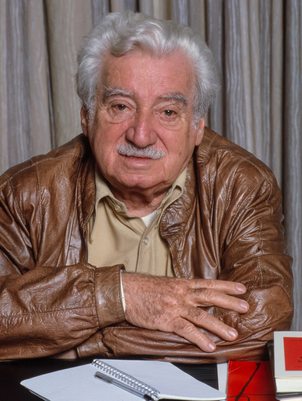
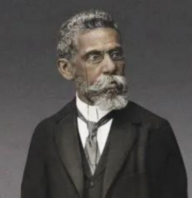
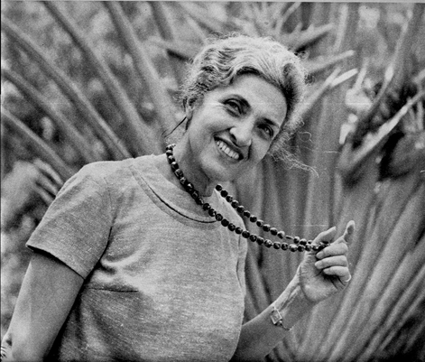
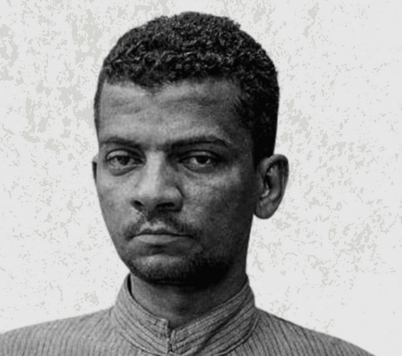

Autores Brasileiros

Jorge Amado
Um dos autores mais populares do Brasil, escreveu Gabriela, Cravo e Canela e Capitães da Areia.
Clarice Lispector
Reconhecida pela escrita introspectiva e existencial, autora de A Hora da Estrela.

Machado de Assis
Um dos maiores nomes da literatura brasileira, criador de Dom Casmurro e Memórias Póstumas de Brás Cubas.

Cecília Meireles
Poetisa brasileira conhecida por sua sensibilidade e musicalidade, autora de Romanceiro da Inconfidência.
Carlos Drummond de Andrade
Considerado um dos maiores poetas do Brasil, com poemas marcantes sobre o cotidiano e a existência.

Lima Barreto
Autor de Triste Fim de Policarpo Quaresma, retratou as injustiças sociais do Brasil republicano.